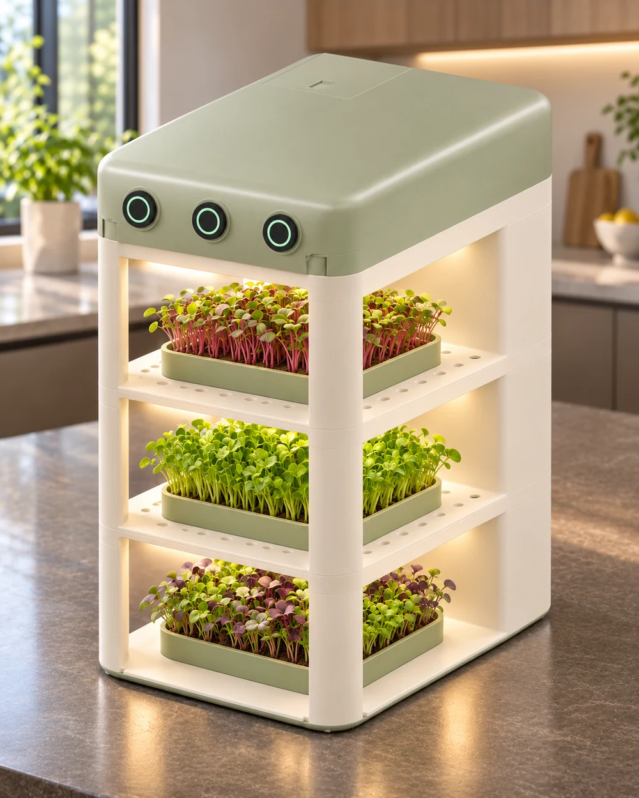

Radish.
Peppery leaves for a sandwich or salad. In a study of 25 microgreens, green daikon radish had the highest vitamin E concentration among the samples tested. [1]
Virelis
A countertop microgreens grower
Virelis is a three-tier countertop microgreens grower in development. Base is planned with tactile buttons and no screen; Pro is planned with screen-based guidance and automatic light cycles. We're developing pre-seeded mats, with compatible homemade mats planned too.
As of 17 November 2026, the Pro prototype is nearing completion and Base is in development. Growth has been demonstrated, but some functions still need manual control. Spray coverage and drip control need improvement. Nothing is on sale yet.
Join the Waitlist
Base & Pro · In development
Base is in development; the Pro prototype is nearing completion. This comparison describes intended features, not production-ready specifications.

| Feature | Base | Pro |
|---|---|---|
| Development status | In development | Prototype nearing completion |
| Growing functions | Planned automatic | Planned automatic |
| Controls | Tactile buttons No screen | Screen-based |
| Growth-duration prediction | Not included | Planned estimates |
| Automatic light cycles | Not included | Planned |
Base is shown with its planned screenless button design; Pro is shown with a screen. These are design renders, not production photographs. As of 17 November 2026, Base is in development and Pro is nearing prototype completion, not production-ready. Planned duration estimates are not guaranteed harvest dates; remaining specifications and accuracy still need validation.
Why microgreens?
Snip some over eggs, tuck them into a sandwich or add a handful to a salad. Studies have measured vitamins C, E and K1, plus beta-carotene, in microgreens. The amounts vary a lot by variety. [1]
Nutrition research examples — see the refill section for our launch varieties.
Peppery leaves for a sandwich or salad. In a study of 25 microgreens, green daikon radish had the highest vitamin E concentration among the samples tested. [1]
A sweeter-tasting option to tuck into a wrap. Researchers have also measured vitamin C in pea microgreens grown under controlled conditions. [2]
A splash of purple in a bowl of greens. Red cabbage led the vitamin C measurements in that same 25-variety study. Different leaves bring different things to the table. [1]
We haven't lab-tested a Virelis harvest. Seed variety, light, growing conditions, harvest stage, storage and portion size can change what you eat. These findings aren't a promise of health effects or higher nutrition from the machine, and a small garnish doesn't replace a varied diet.
Prototype progress · 17 November 2026
The November prototype photo shows microgreens on all three shelves. It has minor edits, mainly to the background. Growth has been demonstrated, but some functions still required manual control.
The Pro prototype is nearing completion, not production-ready. We still need to reduce dripping and achieve a wider spray cone. Base is also in development.
The image above is the updated design render. It shows the finish we're working towards.

The growing routine
Our planned pre-seeded mats are intended to take the sowing and measuring out of starting a grow. The intended setup uses one mat on each tier, with automatic growing functions planned for both models. Automatic light cycles are planned for Pro, not Base.
You'll still check the grow, top up water as directed, harvest the greens and clean between cycles. The current prototype still needs manual control of some functions; the automatic system and care routine are being developed and tested.
Leave room in front to get the trays in and out. We'll publish the finished appliance dimensions before launch; the proposed mat size below is not the machine's size.
Our launch refill range
Our pre-seeded mats come in packs of 9, 18 or 27. Keep them all the same or mix Mixed Greens, Micro Pak Choy, Cress moss and Kohlrabi purple in groups of three per variety. Three mats fill Virelis's three growing tiers.
Standard pack
NZ$18
Three sets of three, ready for your next grows.
Larger pack
NZ$32
More refills on hand, with your choice of varieties.
Best per-mat value
NZ$45
Our largest launch pack. Mix your favourites or choose one variety.
All three pack sizes are part of our launch range. Prices are indicative, in New Zealand dollars, and exclude shipping. The private shop is a sandbox preview, not a live order service. Growing cycles describe fresh sets of mats, not a promised harvest size or time.
Choose one-off packs whenever you need them. We're also exploring optional deliveries every 4, 6 or 8 weeks, with a possible subscriber discount of around 10%.
Recurring deliveries aren't active. Intervals, discounts and terms will be confirmed before any subscription opens; they won't be a requirement for using Virelis.
We're working towards compact bundles for storage and delivery, using lightweight recyclable cardboard packaging with suitable internal protection for the pre-seeded mats.
Packaging dimensions, storage life and shipping rates haven't been confirmed. We'll publish the tested storage guidance and delivery details before refills go on sale.
Ready-to-grow or homemade
Prefer a mat that's already seeded? That's what our refills provide. Prefer making your own? We're designing Virelis to support compatible homemade seed mats too.
Our refills are a convenient option, not something you're locked into buying. We'll publish the fit and growing guidelines once validation is complete. Subscriptions will be entirely optional.
About using Virelis
That's part of the plan. We're designing for compatible homemade mats as well as our own pre-seeded refills. The proposed size is 125 × 125 mm; thickness, suitable materials and seed guidance still need validation. It isn't universal compatibility with any mat.
No. Our 9-, 18- and 27-mat packs are one-off refills. Any future subscription would be optional; recurring deliveries aren't active.
Three complete growing cycles when you use all three tiers: three mats per cycle, one on each tier. This doesn't promise a particular harvest size, regrowth or time to harvest.
Shelf life is still being tested. We'll publish storage conditions and a validated storage period before sale, rather than guess how long a pack will last.
Yes. We offer 9-, 18- and 27-mat packs as one-off refills. You can try the pack selector in the password-protected sandbox shop; real orders aren't open yet.
Yes. Choose Mixed Greens, Micro Pak Choy, Cress moss or Kohlrabi purple in multiples of three mats per variety. A 9-pack could be 3 + 3 + 3, 6 + 3, or 9 of one variety. The same rule applies to the 18- and 27-mat packs.
The Base design is screenless, with tactile buttons and planned automatic growing functions, but no growth-duration prediction or automatic light cycles. Pro is planned with a screen, duration estimates and automatic light cycles. Base is in development and the Pro prototype is nearing completion. The screen in the prototype photo isn't a Base feature.
Automatic growing functions are planned for Base and Pro, but the current prototype still required manual control of some functions during growing. Spray coverage and drip control need improvement. Base won't have automatic light cycles; those are planned for Pro. The final water routines, settings and care guidance still need validation.
No. Seeds, water, growing medium and handling can all introduce contamination. Use seeds sold for edible microgreens and clean drinking water, keep hands and harvesting tools clean, and clean trays between grows. Refrigerate harvested greens. These are basic precautions, not a safety guarantee; we'll publish product-specific care instructions before launch. Microgreen food-safety guidance (PDF).
Not yet. We have a physical prototype, but no final appliance price or confirmed release date. The mailing list is where we'll share the next build and announce those details when they're settled.
Virelis
Join for development updates on the machine, seed mats and optional refill plans. No purchase or subscription commitment.
Join the Waitlist